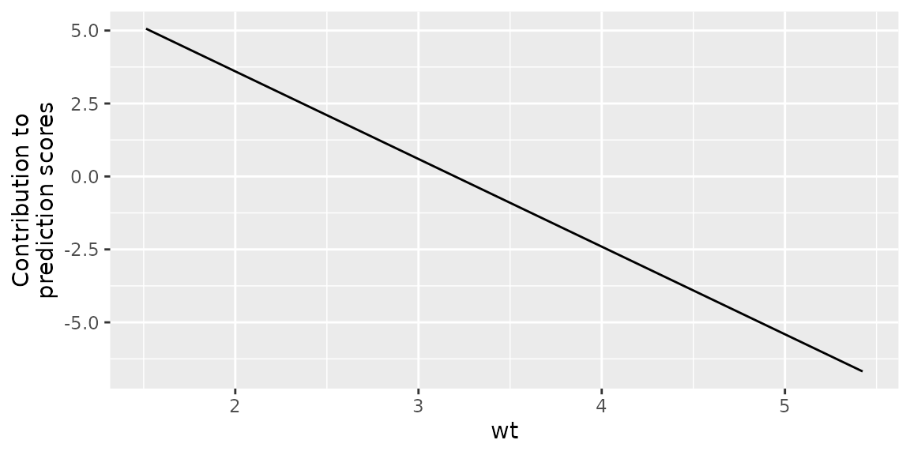

Visualizing a compboost model
basic-viz.RmdCompboost comes with a variety of function to gain
deeper insights into a fitted model. Using these function allows to get
different views on the model.
Fit compboost
The data set we use is mpg:
| mpg | cyl | disp | hp | drat | wt | qsec | vs | am | gear | carb | |
|---|---|---|---|---|---|---|---|---|---|---|---|
| Mazda RX4 | 21.0 | 6 | 160 | 110 | 3.90 | 2.620 | 16.46 | 0 | 1 | 4 | 4 |
| Mazda RX4 Wag | 21.0 | 6 | 160 | 110 | 3.90 | 2.875 | 17.02 | 0 | 1 | 4 | 4 |
| Datsun 710 | 22.8 | 4 | 108 | 93 | 3.85 | 2.320 | 18.61 | 1 | 1 | 4 | 1 |
| Hornet 4 Drive | 21.4 | 6 | 258 | 110 | 3.08 | 3.215 | 19.44 | 1 | 0 | 3 | 1 |
| Hornet Sportabout | 18.7 | 8 | 360 | 175 | 3.15 | 3.440 | 17.02 | 0 | 0 | 3 | 2 |
| Valiant | 18.1 | 6 | 225 | 105 | 2.76 | 3.460 | 20.22 | 1 | 0 | 3 | 1 |
We want to model the miles per gallon (mpg). As features
we include the linear and centered spline of hp,
wt, and qsec. Additionally, we add a
categorical base learner for the number of cylinders
cyl:
mtcars$cyl = as.factor(mtcars$cyl)
set.seed(31415)
cboost = Compboost$new(data = mtcars, target = "mpg", learning_rate = 0.02, oob_fraction = 0.2)
cboost$addComponents("hp", df = 3)
cboost$addComponents("wt", df = 3)
cboost$addComponents("qsec", df = 3)
cboost$addBaselearner("cyl", "ridge", BaselearnerCategoricalRidge, df = 3)
cboost$train(500L, trace = 100L)
#> 1/500 risk = 17 oob_risk = 17
#> 100/500 risk = 3 oob_risk = 2.8
#> 200/500 risk = 2.4 oob_risk = 3.2
#> 300/500 risk = 2.3 oob_risk = 3.2
#> 400/500 risk = 2.3 oob_risk = 3.1
#> 500/500 risk = 2.2 oob_risk = 3.1
#>
#>
#> Train 500 iterations in 0 Seconds.
#> Final risk based on the train set: 2.2Visualize risk, feature importance, and selection traces
A starting point when analyzing a component-wise boosting model is to take a look at the train and validation risk:
plotRisk(cboost)As we can see, the best validation risk is at iteration 98. Hence, we should set the model to this iteration:
m_optimal = which.min(cboost$getLoggerData()[["oob_risk"]])
cboost$train(m_optimal)Next, we are interested in the most important base learners/features:
plotFeatureImportance(cboost)The last thing we can do to get a more better overview of the model is to have a look how the features/base learners were included into the model:
plotBaselearnerTraces(cboost)
Visualize base learner and partial effects
Next, we want to deep dive into the effects of individual features,
i.e, the effect of the base learners. To that end, we plot the partial
effects of the most important feature wt:
plotPEUni(cboost, "wt")
We observe a clear negative trend, meaning that an increasing weight
indicates lower mpg. Additionally, we can visualize
individual base learners. For example the only categorical feature
cyl:
plotBaselearner(cboost, "cyl_ridge")Here, we observe that 4 cylinder indicates a positive contribution to
mpg while 6 and 8 cylinder are reducing it.
Visualizing individual predictions
During predictions we also want to get an idea about the specific contribution of each feature to the predicted score. Therefore, we take a look at the first observation in the validation data set:
plotIndividualContribution(cboost, newdata = cboost$data_oob[1, ])
As we can see, the prediction is dominated by the offset. To remove
it from the figure we set offset = FALSE:
plotIndividualContribution(cboost, newdata = cboost$data_oob[1, ], offset = FALSE)
The wt and hp have a positive contribution
to the predicted score. This means the car requires less fuel while the
6 cylinder slightly increases the mpg prediction.
Visualizing tensor products
The last visualization convenience wrapper is to illustrate interactions included as tensors. Therefore, we have to add tensors into the model:
mtcars$vs = as.factor(mtcars$vs)
mtcars$gear = as.factor(mtcars$gear)
set.seed(31415)
cboost = Compboost$new(data = mtcars, target = "mpg", oob_fraction = 0.2)
cboost$addTensor("wt", "qsec", df = 2)
cboost$addTensor("hp", "cyl", df = 2)
cboost$addTensor("gear", "vs", df = 2)
cboost$train(500L, trace = 100L)
#> 1/500 risk = 16 oob_risk = 16
#> 100/500 risk = 2.4 oob_risk = 4
#> 200/500 risk = 2.2 oob_risk = 4.4
#> 300/500 risk = 2.1 oob_risk = 4.4
#> 400/500 risk = 2.1 oob_risk = 4.5
#> 500/500 risk = 2 oob_risk = 4.5
#>
#>
#> Train 500 iterations in 0 Seconds.
#> Final risk based on the train set: 2
table(cboost$getSelectedBaselearner())
#>
#> gear_vs_tensor hp_cyl_tensor wt_qsec_tensor
#> 258 181 61Depending on the feature combination (numeric - numeric, numeric - categorical, categorical - categorical) a different visualization technique is used:
library(ggplot2)
gg1 = plotTensor(cboost, "wt_qsec_tensor") + ggtitle("Num - Num")
gg2 = plotTensor(cboost, "hp_cyl_tensor") + ggtitle("Num - Cat")
gg3 = plotTensor(cboost, "gear_vs_tensor") + ggtitle("Cat - Cat")
library(patchwork)
gg1 | gg2 | gg3